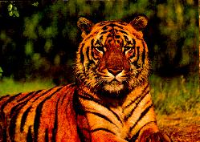
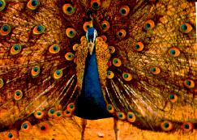
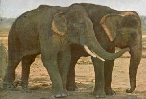
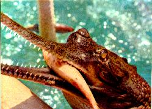
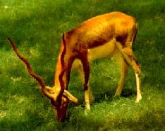
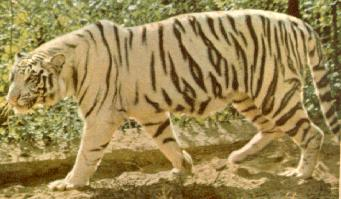

The national animal is found in the dense forests of the State. An endangered species, the tiger has slowly been growing in numbers with careful conservation. Similipal Tiger Reserve with an area of 2750 sq km and core area of 303 sq km, has been dedicated for tiger conservation.

The national bird of India is found in the forests and its outskirts, all over the State. Though found wild, the peacock shows little fear of man and his environment.

The largest land mammal on earth, is found throughout the State. There are at least 2000 Elephants with an average male shoulder height of 2.75 metres.

Gharial, a fish eating harmless crocodile, on the threshold of extinction, is found only in river Mahanadi. A Gharial Conservation and Research Unit has been established at Tikarparha for increasing its population by rearing and releasing hatchlings into this river. Captive breeding of Gharial succeeded in Nandan Kanan for the first time in the world. Mugger crocodiles are found in main rivers of Orissa. The salt water species is restricted to the coastal mangrove forests of Bhitar Kanika.

Once found all over, the black buck today is mainly found in the Balukhand and Chilika ranges of Puri district and the Bhetonoi and Purushottampur areas of Ganjam district. The adult bucks are black in color, with spiralling horns, whereas the young and females are yellowish brown.

The white tigers are only found in the State's zoological park - Nandan Kanan.
Your suggestions are always welcome...


| This Page Has Been Accessed | Times Since |
|---|
was last updated on :